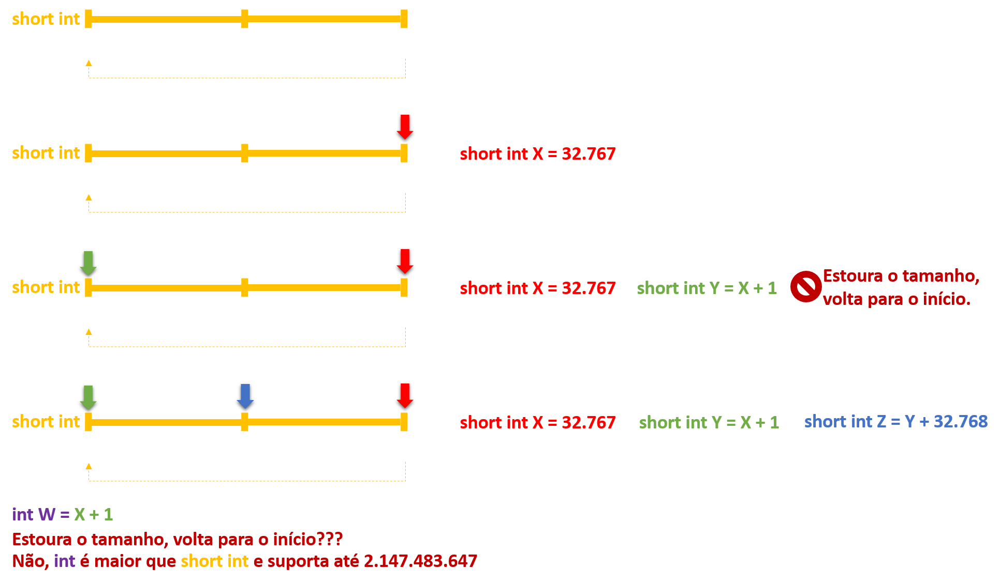

Algoritmos e Técnicas de Programação
Aula 03
Prof. Dr. Raulcézar Alves
raulcezar@gmail.com
Tipos de dados em C/C++
Mais comuns
- int: para números inteiros
- float: para números reais
- char: para um caracter de texto
Tipos de dados em C/C++
Não existem
- boolean (Verdadeiro/False): é utilizado int, sendo 0 para falso e 1 (ou qualquer outro número diferente de 0) para verdadeiro
- cadeia/sequência de caracteres: de forma nativa, não existe tipo STRING, é utilizado um vetor de caracters para guardar palavras com tamanho maior que 1.
Tipos de dados em C/C++
Exemplos
- float X;
- char SEXO;
- char NOME[40];
Tipos de dados em C/C++
| Tipo | Memória (bytes) | Intervalo (CPU 32Bits) | Formato |
| short int | 2 | -32.768 a 32.767 | %hd |
| unsigned short int | 2 | 0 a 65.535 | %hu |
| unsigned int | 4 | 0 a 4.294.967.295 | %u |
| int | 4 | -2.147.483.648 a 2.147.483.647 | %d |
| long int | 4 | -2.147.483.648 a 2.147.483.647 | %ld |
| unsigned long int | 4 | 0 a 4.294.967.295 | %lu |
| long long int | 8 | -(2^63) a (2^63)-1 | %lld |
| unsigned long long int | 8 | 0 a 18.446.744.073.709.551.615 | %llu |
| signed char | 1 | -128 a 127 | %c |
| unsigned char | 1 | 0 a 255 | %c |
| float | 4 | | %f |
| double | 8 | | %lf |
| long double | 12 | | %Lf |
Tipos de dados em C/C++
Exceder tamanho:
- valor é circular
- quando uma variável recebe um valor maior que a capacidade do tamanho de seu tipo, ele estoura e se começa a contar do restante
Tipos de dados em C/C++

Exercício
Quanto valem no exemplo anterior?
- X:
- Y:
- Z:
- W:
Exercício
Execute o código abaixo e veja o resultado do exemplo
#include<stdio.h>
int main()
{
short int X = 32767;
short int Y = X + 1;
short int Z = Y + 32768;
int W = X + 1;
printf("%hd %hd %hd %d ",X,Y,Z,W);
}
Comando de atribuição em C/C++
utilizado para atribuir valor ou operação para uma variável, por meio do símbolo =, como:
- X = 4;
- SEXO = 'F';
- Y = X + 2.5;
Comando de atribuição em C/C++
- um caracter é representado entre apóstofros ('), como:
- SEXO = 'F';
- Já cadeias de caractares ficam entre aspas ("). Para armazenar uma cadeia de caracteres em uma variável utiliza-se o comando strcpy(variável,"valor"), ao invés da atribuição com =, e deve-se incluir a biblioteca string.h.
- strcpy(NOME,"Joao");
- todas as linhas de comando em C devem ser finalizadas com ;
Comando de atribuição em C/C++
Exemplos errado e correto:
char linguagem[20];
linguagem = "linguagem C"; /* ilegal em C */
strcpy( linguagem, "linguagem C"); /* legal */
Exercício
Faça um programa que:
- possua uma variável inicializada com seu nome completo, atribuindo o valor com strcpy
- imprima seu conteúdo com printf("%s", ...)
Exercício
Faça um programa que:
- possua uma variável inicializada com seu nome completo, atribuindo o valor com strcpy
- imprima seu conteúdo com printf("%s", ...)
#include<stdio.h>
int main()
{
char nome[50];
strcpy(nome, "Raulcezar Alves");
printf("%s",nome);
}
Comandos de Entrada em C/C++
são utilizados para receber dados digitados pelo usuário e salvar em variáveis
- cin: cin >> X (armazena os caracteres em X até encotrar um espaço em branco)
- gets: gets(X) (armazena todos os caracteres digitados em X)
- scanf: scanf(%FORMATO,&X) (armazena todos os caracteres digitados em X, dado o formato como visto na tabela de tipos)
Utilizaremos preferencialmente scanf
Comandos de Saída em C/C++
são utilizados para mostras dados na tela
- cout: cout << X
- printf: printf("%FORMATO",X)
Utilizaremos preferencialmente printf
Exercício
Digite o número float 123.45 e o armazene em uma variável. Depois, o imprima das seguintes formas:
- mostrando apenas a parte inteira com 3 casas
- mostrando a parte inteira com 3 casas e mais 2 decimais
Exercício
Digite o número float 123.45 e o armazene em uma variável. Depois, o imprima das seguintes formas:
- mostrando apenas a parte inteira com 3 casas
- mostrando a parte inteira com 3 casas e mais 2 decimais
#include<stdio.h>
int main()
{
float x;
printf("Digite um numero \n");
scanf("%f",&x);
printf("parte inteira %3.0f \n",x);
printf("parte inteira e decimais %3.2f \n",x);
return 0;
}
Comentários em C/C++
documentar código, ignorado pelo compilador
- // comentário de uma linha
- /* ... */ comentário em bloco para múltiplas linhas
#include<stdio.h>
int main()
{
int x,y,z;
//atribuir valores
x=2;
y=3;
/*
abaixo x e y sao somados
o resultado eh armazenado em z
*/
z=x+y;
return 0;
}
Operadores e Funções em C/C++
Operadoers Básicos:
| Operador | Exemplo | Comentário |
| = | x=y | atribuição |
| + | x+y | soma de x e y |
| - | x-y | subtração de y em x |
| * | x*y | multiplicação de x por y |
| / | x/y | divisão de x por y |
| % | x%y | resto da divisão de x por y |
Exercício
Mostre o resto da divisão de 10 por 4.
Exercício
Mostre o resto da divisão de 10 por 4.
#include<stdio.h>
int main()
{
int x;
x = 10%4;
printf("%d",x);
return 0;
}
Operadores e Funções em C/C++
Operadoers Matemáticos de atribuição, fazem operações e já armazenam o resultado:
| Operador | Exemplo | Comentário |
| += | x+=y | equivale a x=x+y |
| -= | x-=y | equivale a x=x-y |
| *= | x*=y | equivale a x=x*y |
| /= | x/=y | equivale a x=x/y |
| %= | x%=y | equivale a x=x%y |
| ++ | x++ | equivale a x=x+1 (incremento) |
| -- | x-- | equivale a x=x-1(decremeto) |
Exercício
Inicialize x com valor 10 e imprima seu conteúdo. Depois incremente x e mostre novamente.
Exercício
Inicialize x com valor 10 e imprima seu conteúdo. Depois incremente x e mostre novamente.
#include<stdio.h>
int main()
{
int x=10;
printf("%d \n",x);
x++;
printf("%d \n",x);
return 0;
}
Operadores e Funções em C/C++
Operadoers Lógicos, utilizados em estruturas condicionais (próximas aulas). Retorna 1 se verdadeiro e 0 se falso:
| Operador | Exemplo | Comentário |
| == | x==y | x igual a y |
| != | x!=y | x diferente de y |
| <= | x<=y | x menor ou igual a y |
| >= | x>=y | x maior ou igual a y |
| < | x<y | x menor que y |
| > | x>y | x maior que y |
Exercício
Inicialize x com valor 10 e y com valor 9. Teste as operações x>y, x<y, x==y e x!=y, imprimindo os resultados.
Exercício
Inicialize x com valor 10 e y com valor 9. Teste as operações x>y, x<y, x==y e x!=y, imprimindo os resultados.
#include<stdio.h>
int main()
{
int x,y,resultado;
x=10;
y=9;
resultado = x>y;
printf("%d \n",resultado);
resultado = x<y;
printf("%d \n",resultado);
resultado = x==y;
printf("%d \n",resultado);
resultado = x!=y;
printf("%d \n",resultado);
return 0;
}